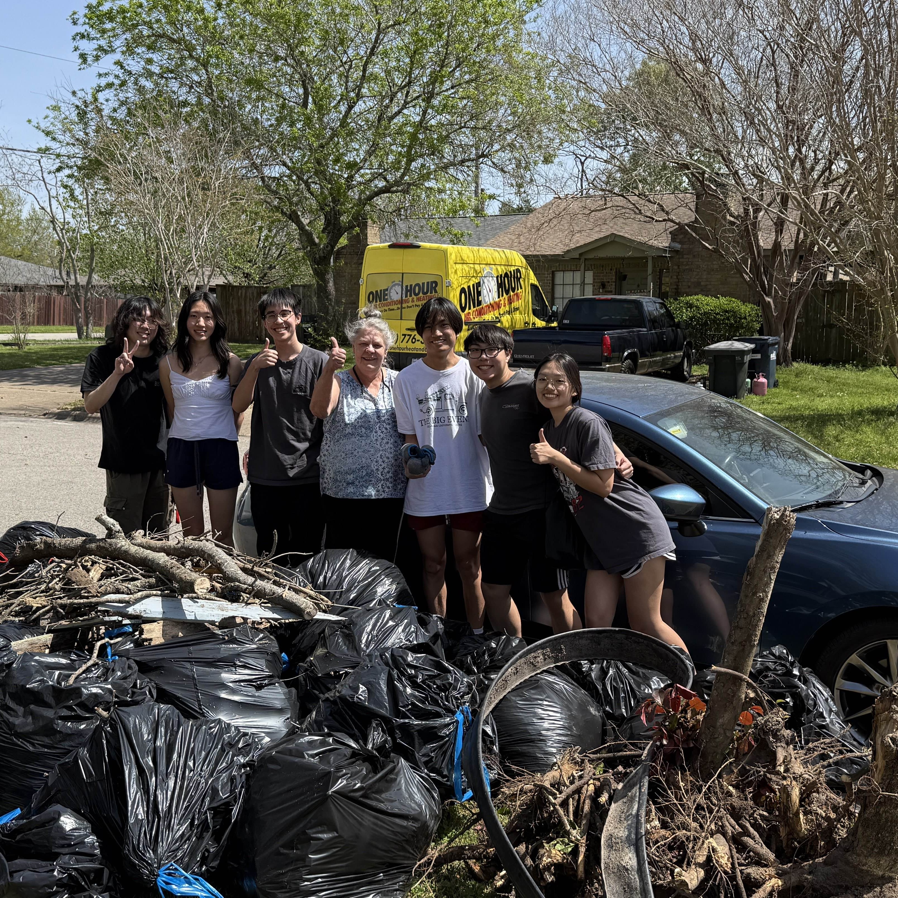
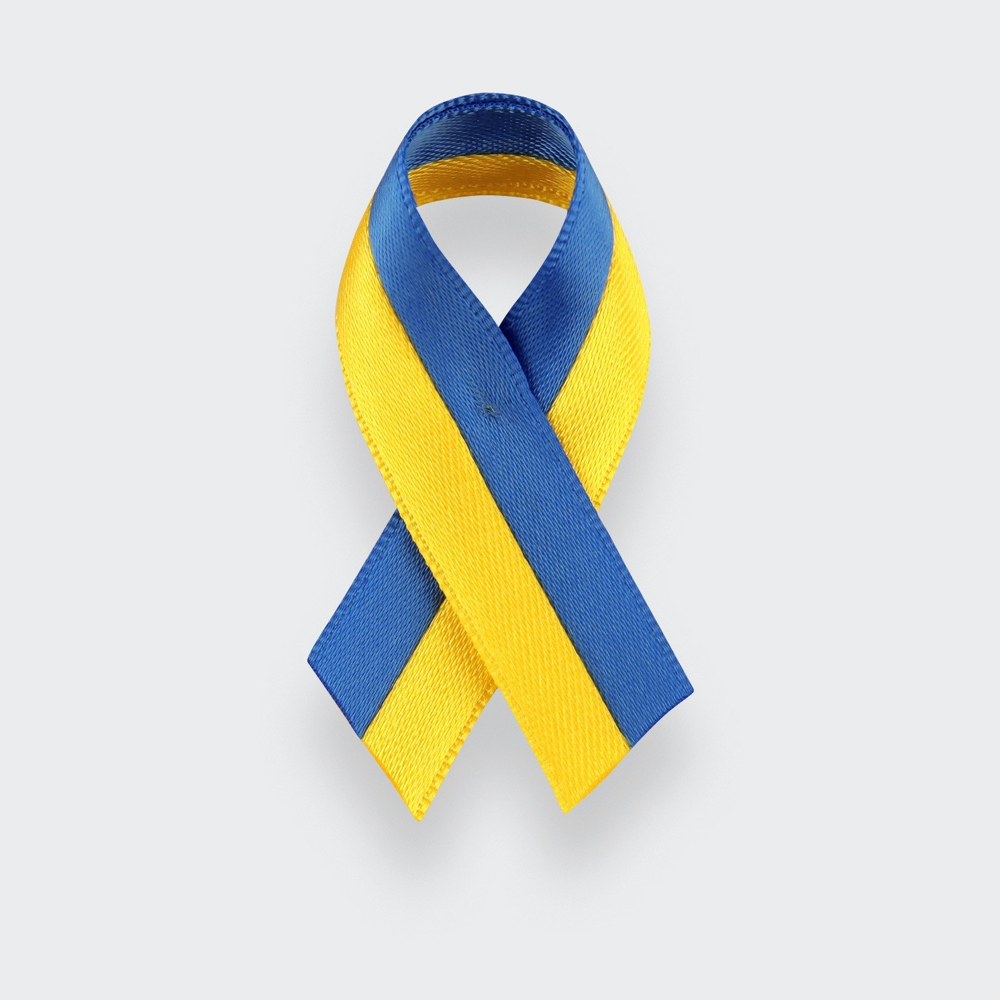
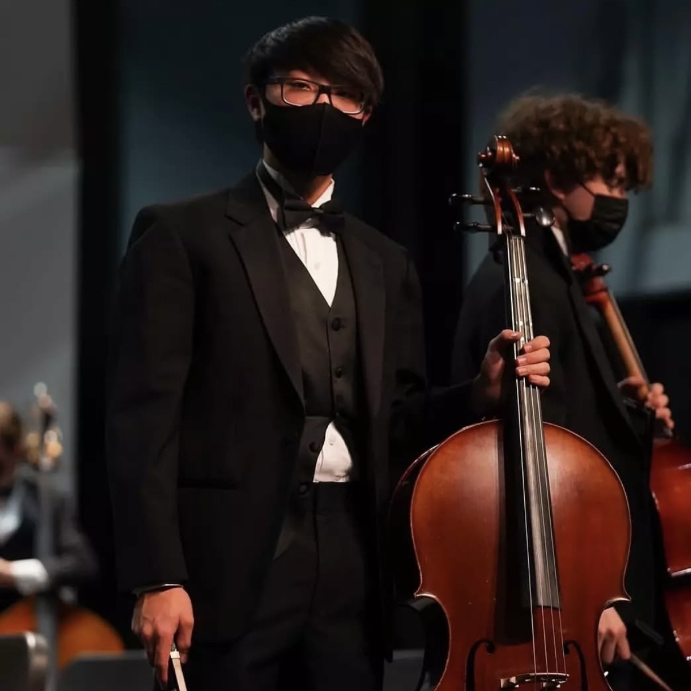

TAO Big EventRestored an elderly woman's yard as part of The Big Event ran by Texas A&M. Link |

Interact ClubHosted fundraisers at school and contributed to a total of $3,436 raised for mobile medical units to be deployed in Ukraine. Link |

Encouragement QuintetWent around the community and performed for people to give them encouragement and support in their time of need. |
I have done many community service projects, each one accomplishing a different need. It's very fulfilling to help people out when they need it, and I enjoy every project I volunteer in. Being able to connect with the local community is nice, and while it is easy to focus only on ourselves at times, it is very refreshing to give a hand to those around you. My most recent act of community service was with TAO, where we participated in TAMU's The Big Event, where we are assigned a local residents house and help them out with things like yard work, house cleaning, and more. Our resident, Donna, was an elderly woman who couldn't lift up the heavy tree branches or rake the thousands of leaves piled up in her yard by herself, so by being able to help her with these tasks, it left a positive impact on everyone involved. For Interact Club, I was the club's president during my senior year of high school, and I got to help out with fundraisers that raised money towards the Ukraine War. Our collective area raised a total of $3,436, which went towards funding Mobile Medical Units to be deployed in active war zones in Ukraine. This was a very fun effort to help towards and I'm so happy we were able to raise so much money for this cause. For the Encouragement Quintet, we went to families who were dealing with hardships at the time, so me and 4 other orchestra members went around and uplifted the spirits of these families with our music. It was very touching to see all these people appreciate our music in the moment, and everyone we visited was grateful for our time and company.